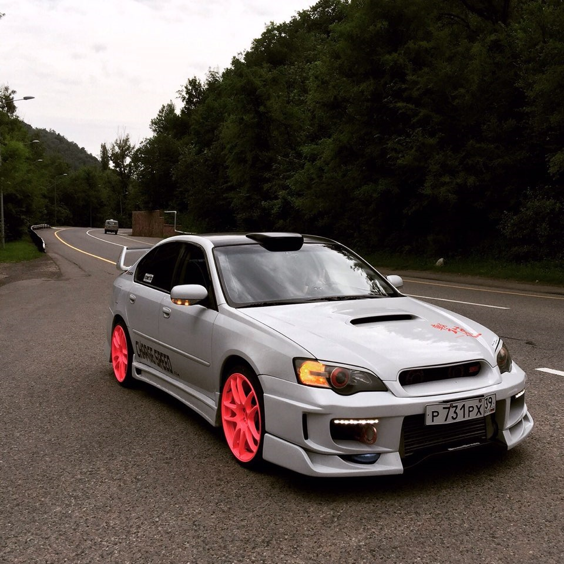
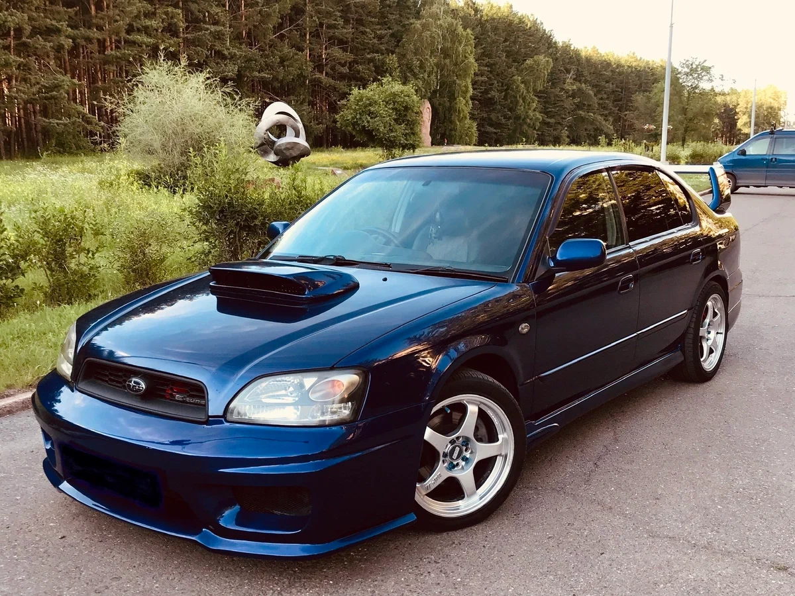
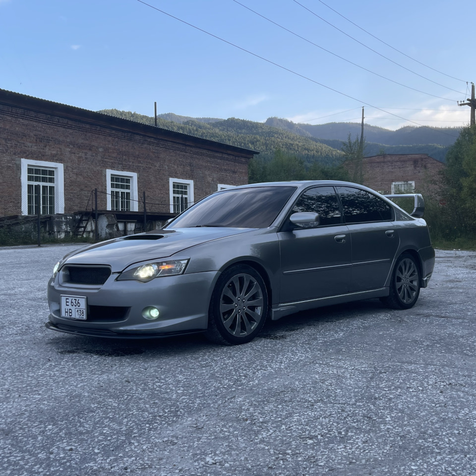

Философия: Семейный автомобиль со спортивной ДНК
Представленное в 1998 году третье поколение Subaru Legacy (кузова
BG для универсала и
BD для седана) продолжило концепцию идеального «спортивного семьянина». Его ключевая философия — объединить в одном автомобиле
простор, комфорт и безопасность для всей семьи с
уникальной динамикой и управляемостью, обеспеченными фирменной симметричной полноприводной трансмиссией и оппозитными двигателями. Это поколение окончательно отделило Legacy от имиджа просто надежного универсала, добавив ему солидности, технологичности и скрытой мощи.
Дизайн и конструкция: Глобализация и усиление
Дизайн стал более плавным, обтекаемым и «европейским», уйдя от угловатости прошлых поколений.
- Кузов вырос в размерах, получив более жесткую конструкцию и улучшенную пассивную безопасность.
- В модельном ряду по-прежнему ключевыми оставались универсал (Touring Wagon), ценимый за практичность, и седан, предлагавший более спортивный имидж.
- Технической основой стала усовершенствованная платформа с подвеской McPherson спереди и многорычажной схемой сзади. Система полного привода Symmetrical AWD предлагалась в нескольких вариантах: от простой вязкостной муфты (VTD) до активной электронноуправляемой системы (Active Torque Split).
Техническое сердце: От надежных атмосферников до турбоярости
Линейка двигателей предлагала выбор для разных типов водителей:
- EJ20 (2.0 л SOHC/DOHC): Базовые атмосферные двигатели, известные своей надежностью и тяговитостью.
- Вершина эволюции — Subaru Legacy B4 (седан) и GT (универсал) с двигателем EJ20 Twin Turbo (260 л.с.): Легендарная силовая установка с последовательной системой Twin Turbo (маленькая турбина для низов, большая — для верхов), созданная для японского рынка. Она обеспечивала феноменальную эластичность и мощную тягу практически с холостых оборотов, скрываясь под скромным обликом семейного автомобиля.
- Для рынков США и Европы предлагался 2.5-литровый атмосферный двигатель EJ25, а также 3.0-литровый оппозитный шестицилиндровый двигатель EZ30 в топовых комплектациях, выдававший 250 л.с. и обеспечивавший исключительную плавность хода.


Новый облик: Стиль и аэродинамика
Четвертое поколение, дебютировавшее в 2003 году, сделало серьезный шаг в сторону премиальности и современности.
- Дизайн стал более стремительным, сложным и агрессивным, особенно в версиях GT и Spec.B, с широкими колесными арками, мощными бамперами и характерной решеткой радиатора.
- Кузов снова вырос, получив еще большую жесткость. Активно использовались высокопрочные стали.
- В интерьере появились более качественные материалы, многофункциональный руль, навигация и продвинутая мультимедийная система.
Технологический рывок: От Twin Turbo к Single Turbo
В этом поколении произошел важный технологический переход.
- Для японского рынка сохранилась турбированная версия, но сложная система Twin Turbo была заменена на один турбокомпрессор с изменяемой геометрией (TD04) в двигателе EJ20. Это решило проблемы с температурой и сложностью обслуживания, сохранив высокую мощность (около 280 л.с.).
- Для международных рынков (США, Европа) предлагался 2.5-литровый турбодвигатель EJ255 мощностью 250-265 л.с., позаимствованный у Impreza WRX, но в более цивилизованной настройке.
- Вершиной линейки стал 3.0-литровый турбированный оппозитный шестицилиндровый двигатель EZ30 в комплектации Spec.B, выдававший около 280 л.с. и сочетавший турбонаддув с невероятной плавностью работы.
- Появилась продвинутая система полного привода SI-DRIVE, позволявшая менять режимы работы двигателя и трансмиссии, а также активные системы стабилизации.
Феномен сбалансированного автомобиля
Legacy третьего и четвертого поколений создали уникальный сегмент на рынке. Это были автомобили, которые
не стыдно было припарковать у бизнес-центра, комфортно везти семью на курорт и азартно проходить серпантин. Их главная сила — в отсутствии очевидных слабостей и в фирменном характере, обеспечиваемом оппозитным двигателем и симметричным полным приводом.
Плюсы и минусы владения сегодня
Плюсы:
- Уникальная, предсказуемая и очень цепкая управляемость благодаря симметричному полному приводу Symmetrical AWD.
- Высокий запас прочности и тяговитость оппозитных двигателей.
- Практичность и огромный объем багажника (особенно у универсала).
- Комфорт и уровень оснащения, опережающий многих одноклассников.
- Культовый статус турбированных версий B4, GT и Spec.B.
Минусы и «болевые точки»:
- Расход топлива у полноприводных турбированных версий весьма значительный.
- Сложность и дороговизна ремонта оппозитных двигателей (требуется снятие мотора для многих работ), особенно турбированных. Характерные проблемы: залегание поршневых колец, износ сальников, проблемы с турбинами.
- Возрастная электроника: отказы датчиков, проблемы с блоком управления двигателем (ECU).
- Коррозия элементов подвески, выхлопной системы, порогов.
- Редкость и дороговизна запчастей для уникальных комплектаций (Spec.B, версии с двигателем EZ30).
Культурное значение и коллекционная ценность
Subaru Legacy этих поколений укрепила репутацию марки как производителя
интеллектуальных, инженерно-продвинутых автомобилей для знающих ценителей. В то время как Impreza WRX гремела на раллийных трассах, Legacy предлагала тот же набор технологий, но в более солидной, взрослой и комплексной упаковке. Сегодня
хорошие экземпляры турбированных Legacy, особенно универсалов GT и седанов Spec.B, стремительно растут в цене, становясь объектом охоты для коллекционеров, ищущих практичный, но не лишенный драйва и уникальности японский автомобиль. Они олицетворяют пик инженерной философии Subaru — веры в то, что безопасность, комфорт и острые ощущения от вождения могут быть неразделимы.


.svg) fayther2@yandex.ru
fayther2@yandex.ru